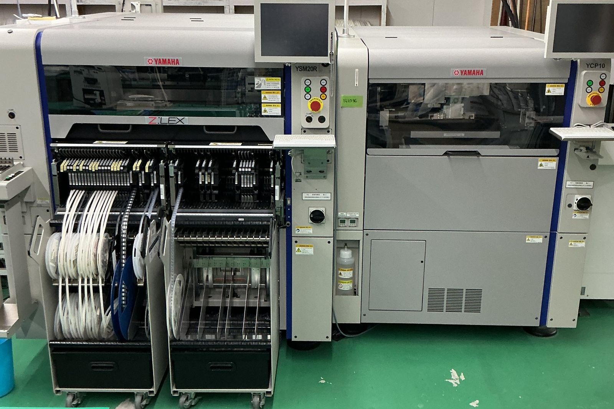

エイコウ電子は、佐原で続いている小さな工場です。ハーネス（配線の束）の加工や、電子基板の半田付け、洗浄、検査。小ロット・多品種の製品を、代表の関口とパートスタッフ7名で一緒に仕上げています。
社名や仕事の内容から、むずかしい印象を持たれるかもしれません。けれど、専門の知識を持って入ってきた人はほとんどいません。
自分がつくっている基板が何になるのか。分かる範囲で、できるだけ説明するようにしています。これまでには、新幹線に使われる基板、クレーンゲーム機の配線、飛行機が着陸するときの誘導灯の部品も手がけました。いまは産業機器が中心で、AIやデータセンターに関わる仕事にも携わっています。お子さんが興味を持ったら、保護者がどんなところで働いているのかを見てもらう、工場見学のようなこともしています。
お客様から直接いただいている仕事で、開発段階の試作も任されています。導入した機械はお客様のところにもない設備で、その工程はうちでしかできません。1年先までの予定も、おおよそ見えています。取引先はほぼ1社なので、仕事同士がぶつかって慌ただしくなることも多くありません。

8:00〜18:20の間で働く時間を決められます。9:00の朝礼にいてくれれば大丈夫です。30分早く帰りたい日は30分早く来る。朝ばたばたした日は15分遅く来て、15分遅く帰る。子どもの年齢によって朝の忙しさは違う、とパートさんたちから聞いて決めたやり方です。
学校行事も通院も、家の用事も。代表がすべての作業に入れるので、1人2人の急な休みはカバーできます。誰かが休んだあとは、別の日に少し長く働いたり、ほかの人が早く来てくれたり。そういう信頼関係ができています。
10:00と14:55に10分ずつ、昼は12:00から1時間。合計80分を全員が同じ時間に休みます。土日祝は休みで、年間休日は120日です。
駐車場が遠いと言われて、会社から歩いて1分の土地を買いました。棚がほしいと言われて、一人ずつ棚をつくりました。ぶら下がり健康器は休憩室に。全部ではありませんが、費用に見合い、みんなに必要なことは実現しています。
募集時は1,240円。いま働いている人は1,280〜1,410円です。設備への投資があと5年ほどで一段落する計画で、そのぶんを賃金に回していく考えです。
みんなが出勤する日に、パートさんが選んだお店のお昼を出しています。お菓子やデザートが出る日もあります。
もともと私は、この工場に修行に来た人間です。来て1年半ほど経ったころ、前の社長が倒れました。戻ってくるまでのつもりで仕事を引き継いだのですが、半年後に亡くなってしまい、そのまま続けて来年で20年目になります。この業界で2年ほどしか働いていないことを、隠しながらの出発でした。
たまたま代表をしていますが、自分が社長だという感覚はあまりありません。上も下もなく、みんなと同じ目線で働いています。私に言いたいことは、わりと言える職場だと思います。会社でカブトムシを飼って、パートさんに怒られたりもしています。
人は1日のほとんどを、寝ているか、食べているか、働いているかで過ごします。どうせ働くなら、楽しく、やりがいを持って働いてほしい。昔は、製造業は女性に好まれる仕事ではないと思っていました。でも、いまいる人たちはものづくりを本当に楽しんでいて、出来上がったときの達成感を感じてくれています。
私には子どもがいないので、会社が子どものようなものです。育てている感覚を楽しんでいます。前の社長が倒れたのは61歳のときでした。私もその年齢に近づいてきたので、私がいなくても仕事が進む工場に、早くしておきたい。私が引退したあとも仕事が続いていく道筋は、すでにできています。今回の募集は、その先を一緒に担ってくれる人を迎えるためのものです。
応募のお電話も、見学のご案内も、私が対応します。佐原の近くにお住まいの方、地元の会社で一緒に働きませんか。
代表・採用担当関口 哲也
※時刻は実際のものです。作業の内容と順番は一例で、日によって変わります

※ここはサンプルです。実際に働く先輩からのメッセージに差し替えます（お顔を出さない形にしています）
半田ごてを持ったのは入社してからです。最初は検査だけ、慣れてから半田付け、と少しずつ増やしてもらえました。
Aさん／パート・入社6年目子どもの行事の日はカレンダーに書いておくだけ。誰かが急に休んだ日は、みんなで少しずつ早く来てカバーしています。
Bさん／パート・入社3年目代表が同じ場所で一緒に手を動かしているので、分からないことをその場で聞けます。
Cさん／パート・入社9年目この基板が何に使われるのかを教えてもらえるので、出来上がったときにうれしくなります。
Dさん／パート・入社1年目入ってから「聞いていなかった」とならないように、気になりそうな点も書いておきます。
※一部サンプルを含みます。実際に寄せられるご質問に合わせて差し替えます